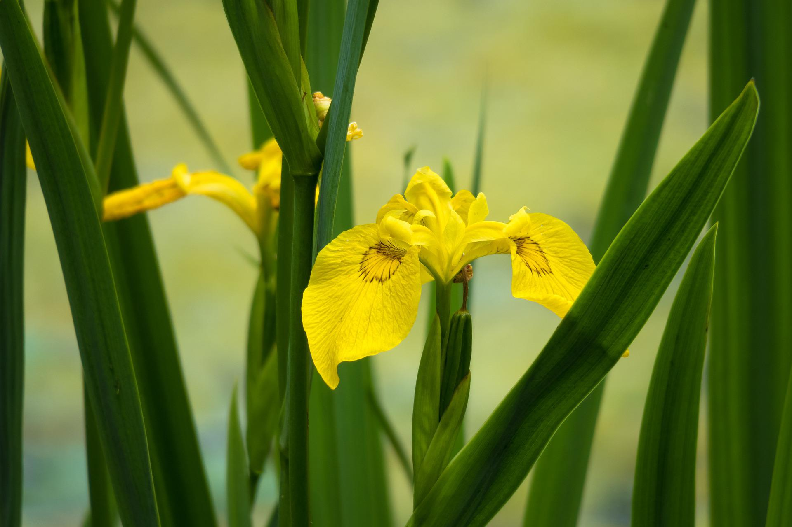
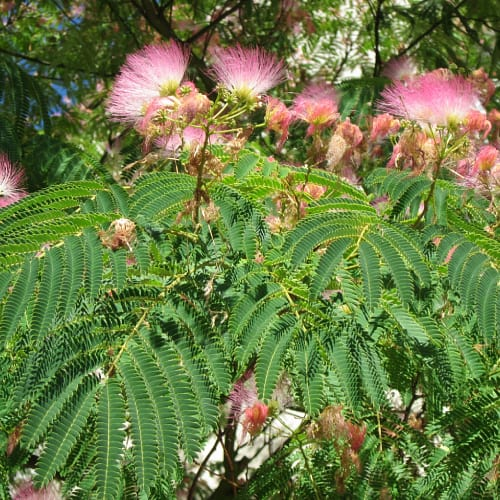

The water-loving yellow iris can be found along the margins of waterways and ponds, and in wet woodlands, fens and saltmarshes. Often mingled among other reedbed plants, its large, bright yellow flowers appear between May and August; they are thought to be the inspiration for the fleur-de-lis symbol, which is used in heraldry and also by the Scouts.

First cultivated in the Far East, the Ginkgo tree has a rich history and is culturally valued.
This undeniably stunning species has a fossil record with extinct relations that go as far back as 290 million years! Now widely cultivated as an ornamental tree with both culinary and medical uses, Ginkgo biloba thrives in substrates with high drainage.
Possibly the oldest extant tree on earth, this species holds a special place in the world of botany.
It belongs to its own group of seed plants as it has no living relatives.

Also commonly called mimosa, the silk tree is a wonderful ornamental addition to gardens that tend to have semi-arid conditions.
This species can tolerate short periods of drought and has water requirements similar to that of succulents.
It favors hot summers, as long as its roots are deeply and occasionally watered.
If it regularly rains, this tree will not require additional moisture.
The roots of A. julibrissin tend to grow long and outward, taking up a considerable amount of space underground.
The true stars of the tree pop up far above the ground and grace the canopy.

In their native range, eucalyptus trees grow in well-drained, gravelly substrates. Interestingly, the majority of their roots tend to occur in the top layers of soil.
This adaptation is a result of having to exploit occasional rainfall in environments that are otherwise dry and nutrient-poor for long periods of time.
Many eucalyptus species have become naturalized in countries that don’t pose the same challenges as their native bush regions.
In the fertile soils of the West, they can grow remarkably quickly and aren’t threatened by hungry kangaroos, koalas, and insects that can eat young trees to death! This is why a single eucalyptus tree can grow up to 10 feet (3 meters) a year when away from potential grazers and poor, shallow soils.

Flowering crabapples are close relatives of the world-famous orchard apple tree.
In fact, they belong to the same genus of short deciduous trees, Malus. Most species tend to do well in sandy soil as they prefer proper drainage, but may require frequent watering sessions to keep the soil moist.
If located in the US, search for the following native species: Malus angustifolia, M. coronaria, and M. fusca.
If located in Europe, you may have better luck with the European crab apple (M. sylvestris).

The hardy northern red oak is notable for its deep taproot system.
This robust species produces tall, thick trunks that raise flourishing canopies far above the ground.
This species can grow to more than 100 feet (30 meters) tall and can reportedly live up to 400 years!
No less than impressive, the northern red oak is definitely easy to identify as its bark is marked by ridges that appear to shine.
Its leaves, which can extend to 10 inches (25 cm) and have gradually tapering lobes, turn a stunning shade of red or brown in fall.